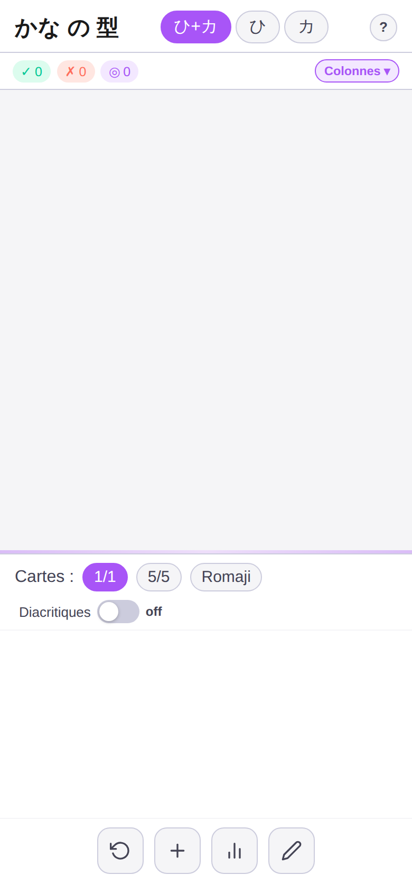
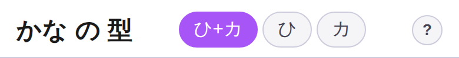
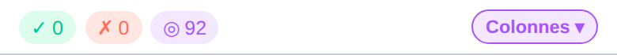
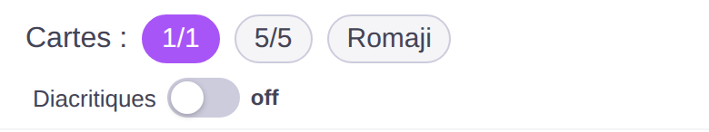
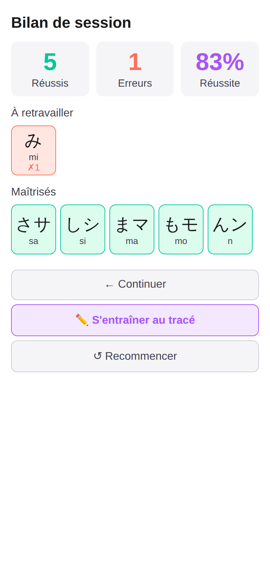
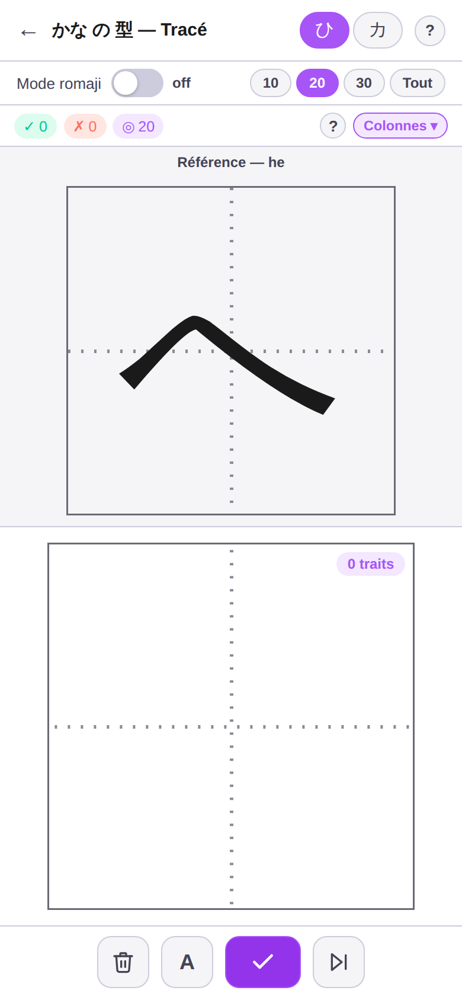
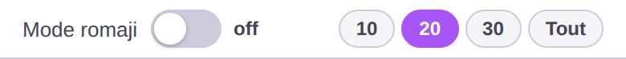
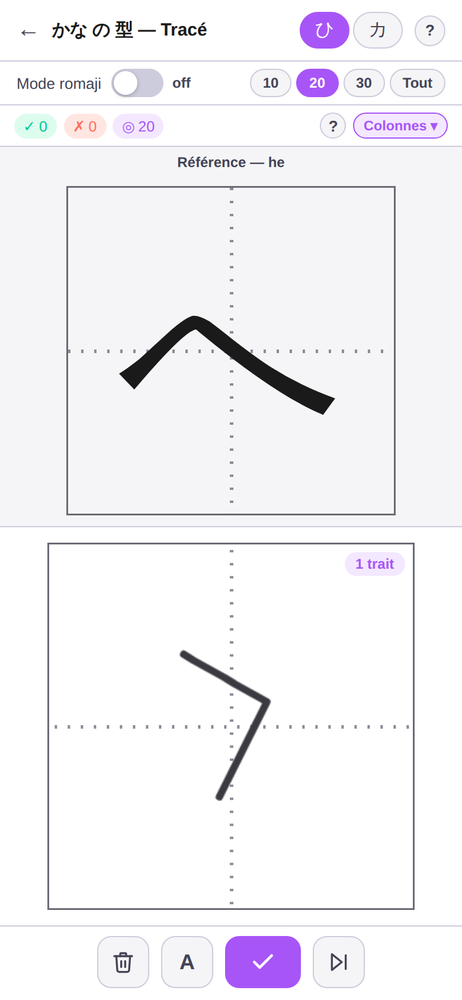
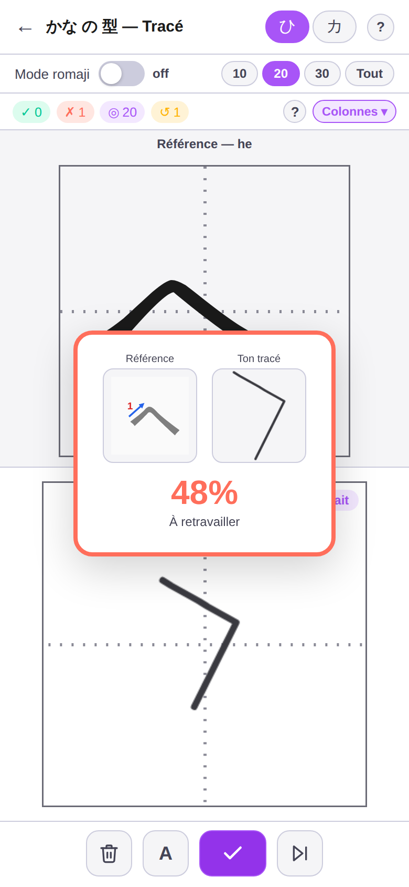
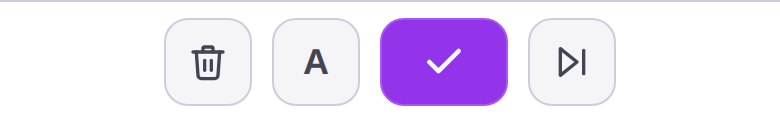

Le guide du tableau et du tracé — comment l'application aide à mémoriser durablement l'hiragana et le katakana, et comment en tirer le meilleur parti.
92 symboles, 46 hiragana et 46 katakana, sans logique phonétique visible pour un œil habitué à l'alphabet latin : c'est ce qui rend le départ difficile. Le réflexe naturel — relire le tableau en boucle dans l'ordre — fonctionne rarement bien chez l'adulte. Trois leviers changent vraiment la donne.
Le tableau n'est pas 92 symboles isolés : c'est 10 familles de consonnes croisées avec 5 voyelles. Apprendre « a·i·u·e·o » comme un seul bloc, puis « ka·ki·ku·ke·ko » comme un autre, donne au cerveau une structure à laquelle accrocher chaque nouveau caractère — au lieu de 92 formes à retenir une par une.
Revoir un kana juste avant de l'oublier consolide bien mieux la mémoire que de le revoir dix fois d'affilée le même jour. C'est le principe derrière le système de relance de l'application : une carte ratée n'est pas réessayée immédiatement, elle revient environ 15 cartes plus tard — assez pour que le rappel demande un petit effort, ce qui est justement ce qui renforce la trace mémorielle.
Reconnaître un kana à la lecture et savoir le tracer de la main sollicitent deux mémoires différentes : la reconnaissance visuelle, et la mémoire procédurale, motrice. Travailler les deux ancre bien mieux qu'une seule. C'est tout l'intérêt de faire alterner le tableau et le tracé plutôt que de se limiter à l'un des deux.
Cet écran te présente une carte kana à la fois (ou plusieurs, selon le réglage) que tu dois associer à sa case dans le tableau de lecture japonaise — colonnes de droite à gauche, comme un vrai tableau gojūon.

Les boutons ひ+カ / ひ / カ activent l'hiragana, le katakana, ou les deux à la fois. Le bouton « Colonnes ▾ » limite le tirage à une ou plusieurs colonnes précises du tableau — c'est le réglage le plus utile en phase d'apprentissage, pour répéter une famille de sons jusqu'à ce qu'elle soit acquise.


Deux façons de répondre : glisser-déposer la carte vers la bonne case du tableau, ou la sélectionner d'un tap puis taper la case cible. Un double-tap sur la carte la retourne pour révéler son romaji sans valider de réponse — utile pour vérifier une intuition sans casser le score.
« 1/1 » ou « 5/5 » règle le nombre de cartes proposées simultanément — commence par 1/1 tant que la reconnaissance n'est pas immédiate. « Romaji » affiche la translitération en continu sous chaque carte : un filet de sécurité à retirer dès que possible, pour forcer la vraie lecture du kana.

À la fin du tirage (ou à tout moment via l'icône graphique), le bilan distingue les kanas « à retravailler », triés par nombre d'erreurs, et les kanas « maîtrisés », dans l'ordre du tableau. C'est la photographie la plus utile pour décider ce qu'il faut revoir la prochaine fois.

Une fois qu'un kana se reconnaît du premier coup d'œil sur le tableau, l'étape suivante consiste à savoir le tracer de mémoire, dans le bon ordre de traits. C'est tout l'objet de cet écran, accessible depuis le bilan de session ou via l'icône crayon.

ひ / カ basculent entre hiragana et katakana. Si tu arrives ici depuis l'écran principal (bouton crayon), le mode et les colonnes déjà choisis là-bas sont repris automatiquement — rien à reconfigurer. « Mode romaji » force l'affichage du romaji à la place du kana, pour t'entraîner à écrire un son sans aucun repère visuel : une difficulté à activer une fois la lecture acquise (sans cette option, environ 30% des cartes l'affichent déjà au hasard, pour t'y habituer progressivement). Les boutons 10 / 20 / 30 / Tout fixent la longueur de la session.

Le kana de référence s'affiche en haut, dans une grille genkō yōshi — le même quadrillage que celui utilisé pour écrire le japonais à la main. Dessine-le dans la grille du bas, au doigt ou à la souris, trait par trait : chaque fois que tu lèves le doigt, ça compte comme un nouveau trait, affiché en haut à droite.

Après validation, ton tracé est comparé à la référence : un pourcentage de ressemblance (réussi à partir de 60%), et une alerte si l'ordre des traits ne correspond pas à la référence. L'ordre compte presque autant que la forme, parce que c'est lui qui rend l'écriture fluide à terme.

Corbeille pour effacer le tracé en cours sans changer de carte. Bouton « A » pour révéler ponctuellement le romaji ou le kana de la carte affichée, sans modifier le tirage des cartes suivantes. Flèche pour passer une carte sans la noter.

Le principe le plus efficace de ce guide — la répétition espacée — n'a de valeur que si la pratique revient régulièrement. Voici un rythme de croisière réaliste, plutôt qu'un objectif ambitieux abandonné en une semaine.
10 à 15 minutes par jour sur le tableau ancrent mieux qu'une heure le dimanche. Le système de relance de l'application (une carte ratée revient environ 15 cartes plus tard) ne produit son effet que si les sessions se répètent à quelques jours d'intervalle — pas en une seule fois.
Travaille une famille de kanas sur le tableau jusqu'à un bilan proche de 90%, avant de l'ajouter au tracé. Tracer un kana qu'on ne reconnaît pas encore bien à la lecture revient à mémoriser un geste sans le sens qui va avec : ça marche moins bien, et c'est plus frustrant.
Semaine 1 : « a·i·u·e·o » et « ka·ki·ku·ke·ko » en hiragana, sur le tableau seul. Une fois ces deux colonnes solides, ajoute-les au tracé tout en introduisant « sa·shi·su·se·so » sur le tableau. Garde le katakana pour une fois que l'ensemble de l'hiragana est confortable : les deux systèmes se ressemblent assez pour se mélanger dans la tête si on les démarre de front trop tôt.